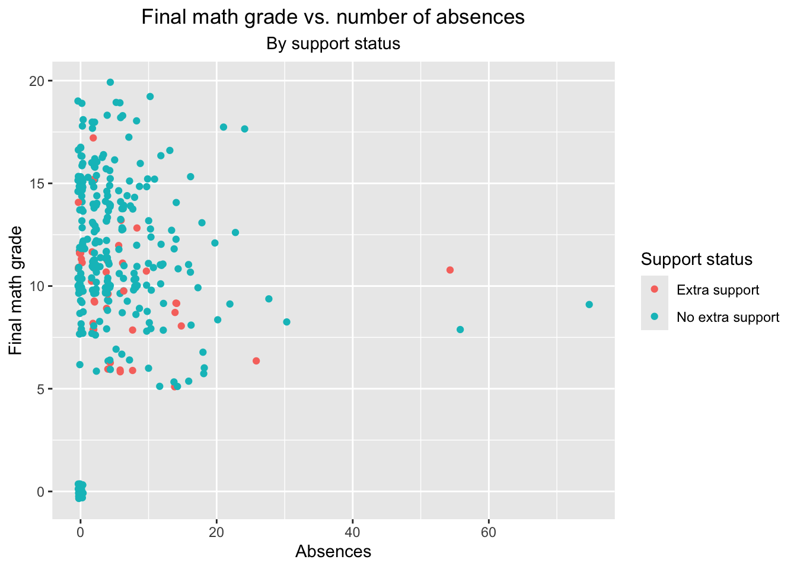

In this homework assignment, we’ll use data from two Portuguese secondary schools from the UCI machine learninng repository to perform some exploratory data analysis. First, we’ll read in the datasets for math and Portuguese scores and then merge the datasets in two different ways. Next, we’ll explore the data by computing some summaries for both categorical and numeric variables.
Reading and Modifying the Data
We’ll first read in and merge the data using the base R code provided on the UCI website.
d1=read.table("student-mat.csv",sep=";",header=TRUE)d2=read.table("student-por.csv",sep=";",header=TRUE)d3=merge(d1,d2,by=c("school","sex","age","address","famsize","Pstatus","Medu","Fedu","Mjob","Fjob","reason","nursery","internet"))print(nrow(d3)) # 382 students
[1] 382
Next, let’s read in the data using the tidyverse function read_delim and merge the two sets of data using an inner join on the same variables specified above:
Warning in inner_join(data1, data2, by = c("school", "sex", "age", "address", : Detected an unexpected many-to-many relationship between `x` and `y`.
ℹ Row 79 of `x` matches multiple rows in `y`.
ℹ Row 79 of `y` matches multiple rows in `x`.
ℹ If a many-to-many relationship is expected, set `relationship =
"many-to-many"` to silence this warning.
The results show that there is a many-to-many relationship when we attempt to join on all of the variables. To alleviate this problem, we’ll perform an inner join using all variables that the datasets have in common except for the variables G1, G2, G3, paid, and absences. This new combined dataset will be used for subsequent analyses.
#Get the names of all variables that the two datasets have in common and remove the selected variables from the vector of namesall_vars<-intersect(names(data1),names(data2))remove_vars <-c("G1", "G2", "G3", "paid", "absences")remain_vars <- all_vars[!all_vars %in% remove_vars]#Join the datasets on the remaining common variablesad_combined <-inner_join(data1, data2, by=remain_vars)ad_combined
# A tibble: 320 × 38
school sex age address famsize Pstatus Medu Fedu Mjob Fjob reason
<chr> <chr> <dbl> <chr> <chr> <chr> <dbl> <dbl> <chr> <chr> <chr>
1 GP F 18 U GT3 A 4 4 at_home teach… course
2 GP F 17 U GT3 T 1 1 at_home other course
3 GP F 15 U GT3 T 4 2 health servi… home
4 GP F 16 U GT3 T 3 3 other other home
5 GP M 16 U LE3 T 4 3 services other reput…
6 GP M 16 U LE3 T 2 2 other other home
7 GP F 17 U GT3 A 4 4 other teach… home
8 GP M 15 U LE3 A 3 2 services other home
9 GP M 15 U GT3 T 3 4 other other home
10 GP F 15 U GT3 T 4 4 teacher health reput…
# ℹ 310 more rows
# ℹ 27 more variables: guardian <chr>, traveltime <dbl>, studytime <dbl>,
# failures <dbl>, schoolsup <chr>, famsup <chr>, paid.x <chr>,
# activities <chr>, nursery <chr>, higher <chr>, internet <chr>,
# romantic <chr>, famrel <dbl>, freetime <dbl>, goout <dbl>, Dalc <dbl>,
# Walc <dbl>, health <dbl>, absences.x <dbl>, G1.x <dbl>, G2.x <dbl>,
# G3.x <dbl>, paid.y <chr>, absences.y <dbl>, G1.y <dbl>, G2.y <dbl>, …
Finally, let’s convert four variables of interest into factor variables that we’ll summarize later. We’ll use the variables for mother’s and father’s educational attainment, weekly study time, and receipt of extra educational support:
edu_labels <-c("None","Primary education","5th to 9th grade","Secondary education","Higher education")ad_data1 <- data1 |>mutate(MeduF=factor(Medu, levels=c(0,1,2,3,4), labels=edu_labels),FeduF=factor(Fedu, levels=c(0,1,2,3,4), labels=edu_labels),studytimeF=factor(studytime, levels=c(1,2,3,4), labels=c("<2 hours","2 to 5 hours","5 to 10 hours", ">10 hours")),schoolsupF=factor(schoolsup,levels=c("yes","no"),labels=c("Extra support","No extra support")))ad_data2 <- data1 |>mutate(MeduF=factor(Medu, levels=c(0,1,2,3,4), labels=edu_labels),FeduF=factor(Fedu, levels=c(0,1,2,3,4), labels=edu_labels),studytimeF=factor(studytime, levels=c(1,2,3,4), labels=c("<2 hours","2 to 5 hours","5 to 10 hours", ">10 hours")),schoolsupF=factor(schoolsup,levels=c("yes","no"),labels=c("Extra support","No extra support")))ad_combined <- ad_combined |>mutate(MeduF=factor(Medu, levels=c(0,1,2,3,4), labels=edu_labels),FeduF=factor(Fedu, levels=c(0,1,2,3,4), labels=edu_labels),studytimeF=factor(studytime, levels=c(1,2,3,4), labels=c("<2 hours","2 to 5 hours","5 to 10 hours", ">10 hours")),schoolsupF=factor(schoolsup,levels=c("yes","no"),labels=c("Extra support","No extra support")))
Exploratory Data Analysis
All of the analyses below were conducted using the combined dataset ad_combined. First, we’ll check the tibble to make sure that the variables appear to have the correct types and to see how much missing data there is for each variable:
The printout of the ad_combined tibble in the last section and the summary performed in the code immediately above indicate that all of the columns appears to have the correct type and there is no missing data.
Analysis of Categorical Variables
We’ll start the exploratory analysis by creating a series of contingency tables, beginning with a one-way table for extra support:
tab1 <-table(ad_combined$schoolsupF)tab1
Extra support No extra support
43 277
We see that most students (277 out of 320) do not receive extra support. Let’s now look at how study time varies between those who receive support and those who don’t:
<2 hours 2 to 5 hours 5 to 10 hours >10 hours
Extra support 10 24 5 4
No extra support 71 133 51 22
Overall, study time doesn’t appear to vary much based on extra support status. The most frequent category of study time is 2 to 5 hours in both groups (24 out of 43 in the extra support group and 133 out of 277 in the no extra support group).
Next, let’s check to see if there is any evidence of maternal education level having an effect on the distribution of these study times by support status:
, , = None
<2 hours 2 to 5 hours 5 to 10 hours >10 hours
Extra support 0 0 0 0
No extra support 0 1 0 1
, , = Primary education
<2 hours 2 to 5 hours 5 to 10 hours >10 hours
Extra support 2 3 0 1
No extra support 19 20 8 4
, , = 5th to 9th grade
<2 hours 2 to 5 hours 5 to 10 hours >10 hours
Extra support 2 8 0 1
No extra support 16 37 15 10
, , = Secondary education
<2 hours 2 to 5 hours 5 to 10 hours >10 hours
Extra support 2 7 3 2
No extra support 15 38 12 5
, , = Higher education
<2 hours 2 to 5 hours 5 to 10 hours >10 hours
Extra support 4 6 2 0
No extra support 21 37 16 2
We’ll next look at a conditional distribution of support status given that for students whose mothers received higher education, first using data filtering:
`summarise()` has grouped output by 'schoolsupF'. You can override using the
`.groups` argument.
# A tibble: 2 × 5
# Groups: schoolsupF [2]
schoolsupF `<2 hours` `2 to 5 hours` `5 to 10 hours` `>10 hours`
<fct> <int> <int> <int> <int>
1 Extra support 10 24 5 4
2 No extra support 71 133 51 22
Finally, let’s create a couple of graphs. First, a stacked bar chart showing the distribution of study times by maternal education level:
stacked_bar <-ggplot(data = ad_combined, aes(x = MeduF, fill = studytimeF)) +geom_bar() +labs(x ="Maternal educational level", y ="N", title="Study time by maternal educational level") +scale_fill_discrete("Study Time") +scale_x_discrete(guide =guide_axis(n.dodge=2)) +theme(plot.title =element_text(hjust =0.5))stacked_bar
Next, we’ll plot the same two variables in a side-by-side bar graph:
side_bar <-ggplot(data = ad_combined, aes(x = MeduF, fill = studytimeF)) +geom_bar(position ="dodge") +labs(x ="Maternal educational level", y ="N", title="Study time by maternal educational level") +scale_fill_discrete("Study Time") +scale_x_discrete(guide =guide_axis(n.dodge=2)) +theme(plot.title =element_text(hjust =0.5))side_bar
We can see again that the most frequently observed maternal educational level is higher education, but both graphs show that the distributions of student study time within education levels are similar.
Analysis of Numerical Variables
For the first summary, we’ll compute the mean, median, and range for age and the two final grade variables:
We see that the median age is 16, and that the average final score in Portuguese (mean = 12.88) is higher than the final score in math (mean = 11.04). Let’s break it down further by computing these summary statistics according to support status:
Here, we notice that those who received extra support were younger, on average, than those who did not. The extra support group also had mean final grades which were lower than those with no extra support. Let’s now group by maternal education:
`summarise()` has grouped output by 'schoolsupF'. You can override using the
`.groups` argument.
# A tibble: 9 × 11
# Groups: schoolsupF [2]
schoolsupF MeduF mean_age median_age sd_age mean_G3.x median_G3.x sd_G3.x
<fct> <fct> <dbl> <dbl> <dbl> <dbl> <dbl> <dbl>
1 Extra support Prim… 16.2 16 1.26 9.75 9.5 0.957
2 Extra support 5th … 15.8 15.5 0.931 10.8 10.5 2.59
3 Extra support Seco… 15.5 15.5 0.527 9.5 11 2.46
4 Extra support High… 16.2 16 1.09 8.08 8 3.71
5 No extra suppo… None 16.5 16.5 0.707 15 15 0
6 No extra suppo… Prim… 16.9 17 1.13 9.55 10 3.99
7 No extra suppo… 5th … 16.7 17 0.993 10.0 11 4.80
8 No extra suppo… Seco… 16.8 17 1.21 11.2 11 4.50
9 No extra suppo… High… 16.4 16 1.17 12.5 13 3.96
# ℹ 3 more variables: mean_G3.y <dbl>, median_G3.y <dbl>, sd_G3.y <dbl>
Within the extra support group, the mean and median ages are notably lower for students whose mothers in the 5th to 9th grade and secondary education groups compared to all other groups.
To examine associations between the numeric variables, we can compute the linear (Pearson) correlation for each pair of the numeric variables as a matrix:
We notice here that each individual period score is highly correlated with the final score, within subject: for example, the correlation for the first period math grade and the final math grade is 0.818.
To explore some of the numerical data graphically, we’ll first create a histogram of the final math grades by support status:
hist_1 <-ggplot(ad_combined, aes(x=G3.x, fill=schoolsupF)) +geom_histogram(binwidth=2,alpha=0.4) +theme(plot.title =element_text(hjust =0.4)) +labs(x="Final math grade", y="N", title="Final math grade by support received") +scale_fill_manual("Support",values =c("Extra support"="blue", "No extra support"="green"))hist_1
This histogram suggests that students who received extra support tended to be less likely to receive higher final grades, but it’s not clear. We can create a kernel density plot of the same information:
kernel_1 <-ggplot(ad_combined, aes(x=G3.x, fill=schoolsupF)) +geom_density(alpha=0.5) +theme(plot.title =element_text(hjust =0.5)) +labs(x="Final math grade", y="N", title="Final math grade by support received") +scale_fill_manual("Support",values =c("Extra support"="blue", "No extra support"="green"))kernel_1
This plot more clearly shows that students who received extra support were less likely to receive final math grades on the higher end of the scale. Let’s create a boxplot to visually check the mean and variation for the final math grades:
box_1 <-ggplot(ad_combined, aes(x=schoolsupF, y=G3.x, fill=schoolsupF)) +geom_boxplot() +theme(plot.title =element_text(hjust =0.5)) +labs(x="Support status", y="Final math grade", title="Final math grade by support received") +scale_fill_manual("Support",values =c("Extra support"="blue", "No extra support"="green"))box_1
We can see that students who received extra support had a median final grade that was only slightly lower than those didn’t receive extra support, but that more members of extra support group had grades toward the lower end of the scale.
Finally, we’ll examine a few scatterplots related to the final math grade:
scatter_1<-ggplot(ad_combined, aes(x = absences.x, y = G3.x, color = schoolsupF)) +geom_point(position="jitter") +labs(x="Absences", y="Final math grade", title="Final math grade vs. number of absences", subtitle="By support status", color="Support status") +theme(plot.title =element_text(hjust =0.5),plot.subtitle =element_text(hjust =0.5))scatter_1

There are no clearly discernable differences between the support status groups, but we do see that all of the students who finished with a zero grade also had no absences.
Now let’s compare the final math grade to the grade received during the first period:
scatter_1<-ggplot(ad_combined, aes(x = G1.x, y = G3.x, color = schoolsupF)) +geom_point(position="jitter") +labs(x="First period math grade", y="Final math grade", title="Final math grade vs. first period math grade", subtitle="By support status", color="Support status") +theme(plot.title =element_text(hjust =0.5), plot.subtitle=element_text(hjust =0.5))scatter_1
As we saw in the correlation matrix, there is a positive association between the grade received in the first period and the final math grade overall, and plot shows that the association holds for students who received extra support and those who didn’t. An interesting point here is that several students who did not receive support received a final grade of zero despite having first period grades ranging from 6 to 8, compared to only 1 student who received extra support.
We can use faceting to get the same kind of scatterplots for each level of study time:
scatter_2<-ggplot(ad_combined, aes(x = G1.x, y = G3.x, color = schoolsupF)) +geom_point(position="jitter") +labs(x="First period math grade", y="Final math grade", title="Final math grade vs. first period math grade", subtitle="By support status and study time", color="Support status") +theme(plot.title =element_text(hjust =0.5), plot.subtitle=element_text(hjust =0.5)) +facet_wrap(~studytimeF)scatter_2
These plots reveal that the positive relationship holds across each level of study time. We also see that the one student with extra support whom we noted earlier had received final grade of zero despite a first period grade of between 6 and 8 averaged more than 10 hours of study time.
Finally, we’ll facet by another categorical variable (father’s education) to get a grid of scatterplots, one for each level of educational attainment:
scatter_3<-ggplot(ad_combined, aes(x = G1.x, y = G3.x, color = schoolsupF)) +geom_point(position="jitter") +labs(x="First period math grade", y="Final math grade", title="Final math grade vs. first period math grade", subtitle="By support status, study time, and paternal education", color="Support status") +theme(plot.title =element_text(hjust =0.5), plot.subtitle=element_text(hjust =0.5)) +facet_grid(FeduF ~ schoolsupF)scatter_3